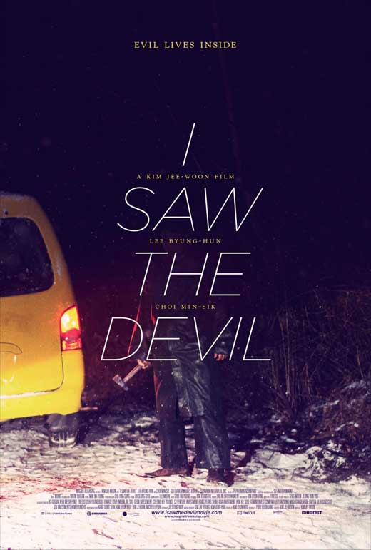
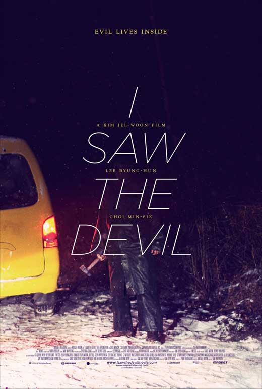
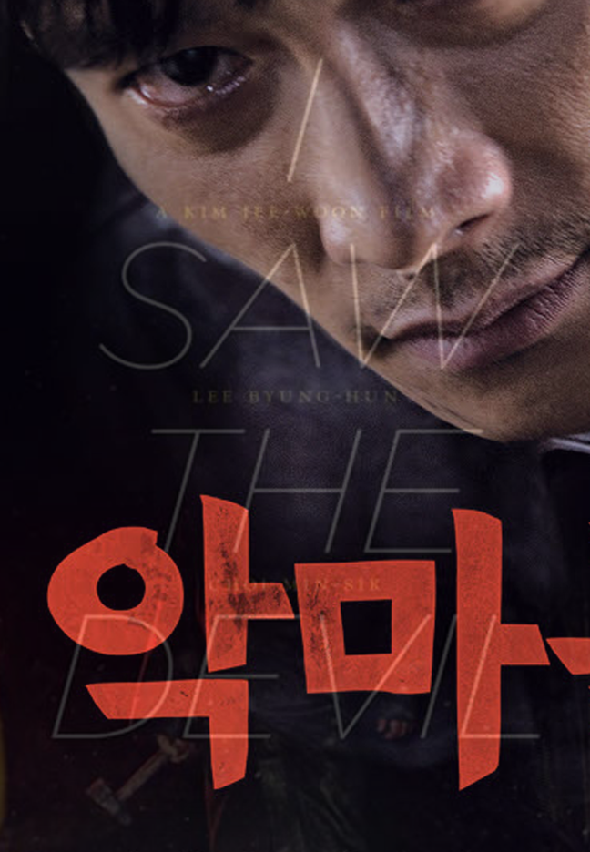
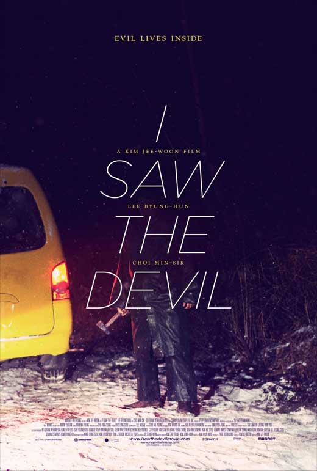

I Saw The Devil
Kim Jee-woon
Academy-bus driver Jang Kyung-chul happens upon Jang Joo-yun one snowy night and offers to help fix her flat tire. Kyung-chul kills her and scatters her body parts. When a boy discovers one of Joo-yun's ears, the police are called in under the command of Section Chief Oh and Squad Chief Jang, the latter of whom is the father of Joo-yun. Kim Soo-hyun, a secret service agent of the National Intelligence Service (NIS) and Joo-yun's fiancé, vows to track down and take vengeance on Joo-yun's murderer.
The Korean version